* Slide and movie files of reionization simulations (Shin, Trac, and Cen, 2008, ApJ, 681, 756 - 770)
Distribution of mass-weighted ionization fraction
: ionization fraction is 1 for red, about 0.5 for green, and 0 for blue.
- 25 Mpc/h subvolume : slide
(download slide files) or
mpeg
- 50 Mpc/h subvolume : slide
(download slide files) or
mpeg
- 100 Mpc/h : slide
(download slide files) or
mpeg (fast but small size)
mpeg (slow but large size)
Distribution of matter density and ionization fraction
: one slice of a simulation box. (shade region = neutral, red = high density)
- 100 Mpc/h :
mpeg
* Examples of Splotch visualization
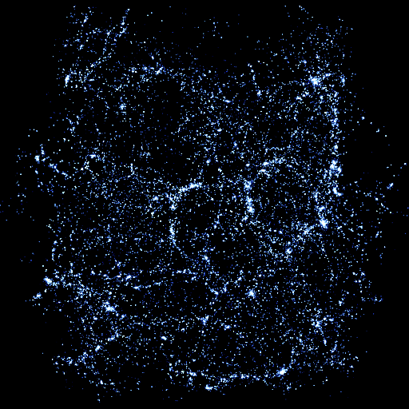
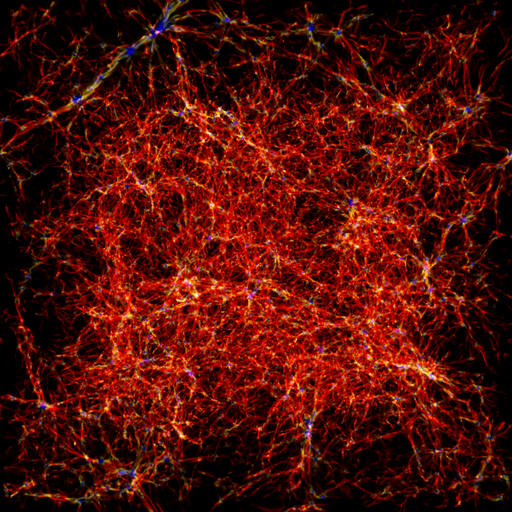
* Gravitational lensing
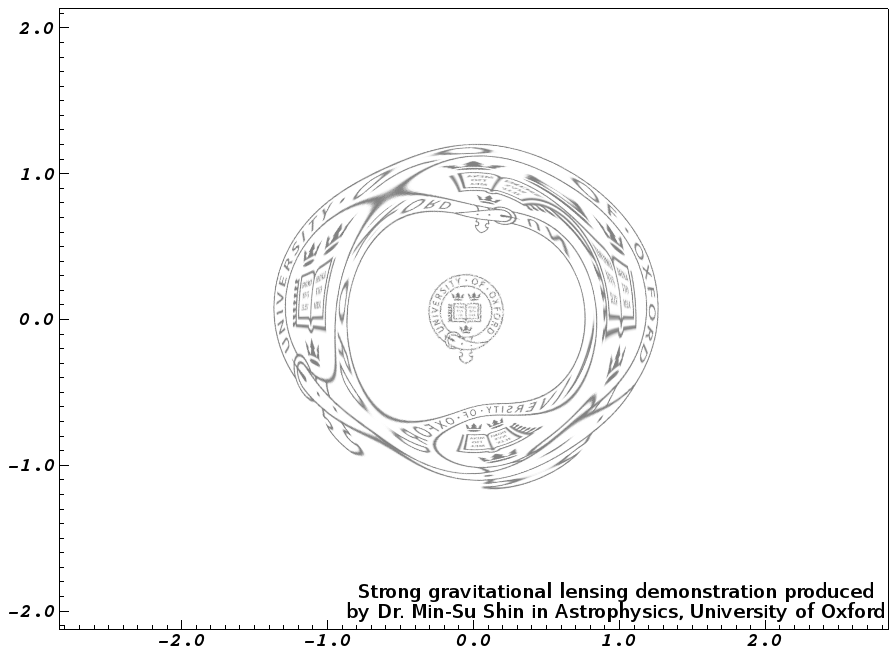
* Colors of asteroids
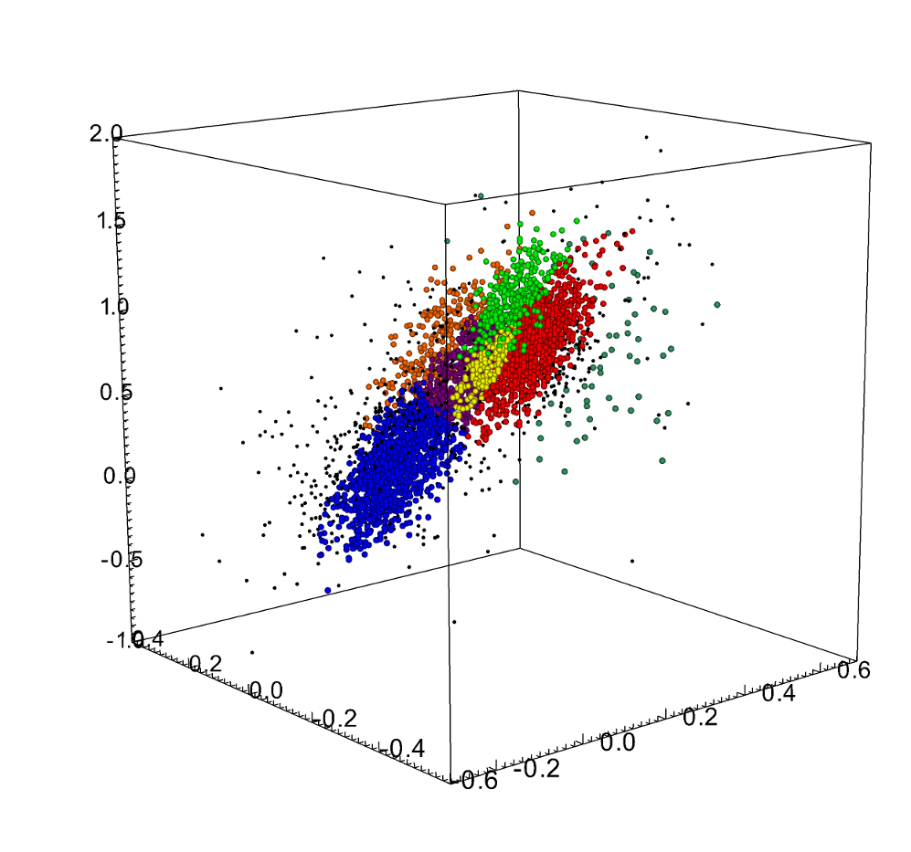
* Astronomical Data Analysis Software and Systems
Application of Open-source Spatio-Temporal Database Systems in
Wide-Field Time-domain Astronomy:
We present our experiences with open-source spatio-temporal database systems
for managing and analyzing big astronomical data acquired by wide-field
time-domain sky surveys. Considering performance, cost, difficulty, and
scalability of the database systems, we conduct comparison studies of open-source
spatio-temporal databases such as GeoMesa and PostGIS that are already being
used for handling big geographical data. Our experiments include ingesting,
indexing, and querying millions or billions of astronomical spatio-temporal
data. We choose the public VVV (VISTA Variables in the Via Lactea)
catalogs of billions measurements for hundreds of millions objects as the
test data. We discuss issues of how these spatio-temporal database systems
can be adopted in the astronomy community.
Applications of Open-source NoSQL Database Systems
for Astronomical Spatial and Temporal Data:
We present our experiences with open-source NoSQL database systems
in analyzing spatial and temporal astronomical data. We conduct
experiments of using Redis in-memory NoSQL database system
by modifying and exploiting its support of geohash for astronmical
spatial data. Our experiment focuses on performance, cost, difficulty, and
scalability of the database system. We also test OpenTSDB as a possible
NoSQL database system to process astronomical time-series data.
Our experiments include ingesting, indexing, and querying millions or
billions of astronomical time-series
measurements. We choose our KMTNet data and the public VVV
(VISTA Variables in the Via Lactea)
catalogs as test data. We discuss issues in using these NoSQL database systems
in astronomy.
* Others
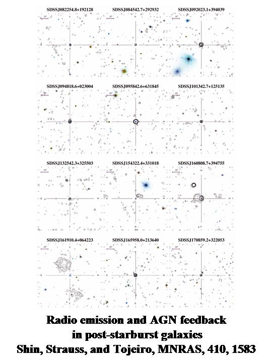
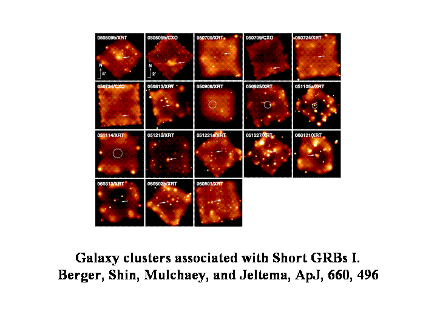
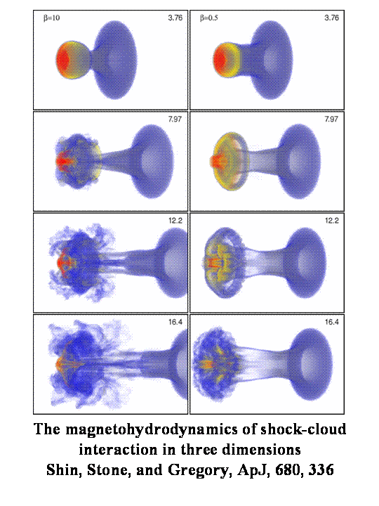
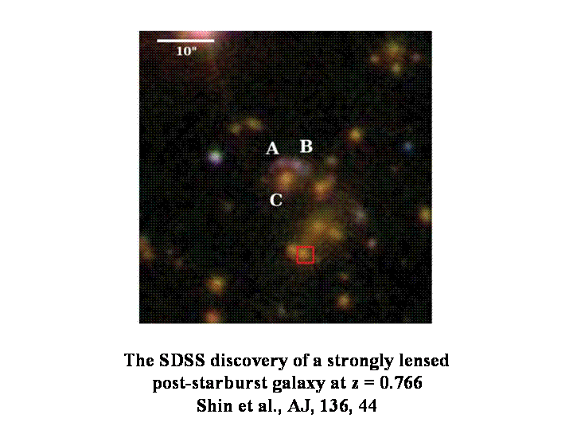
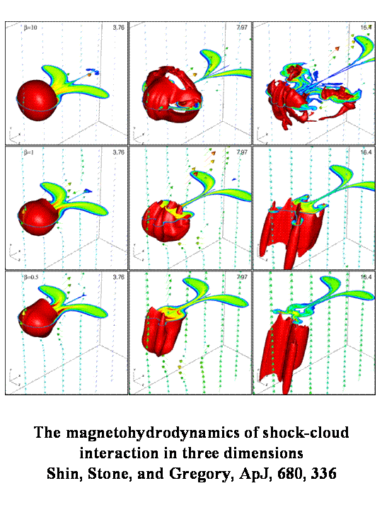
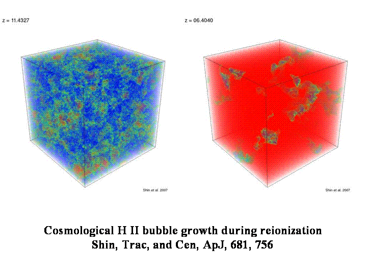
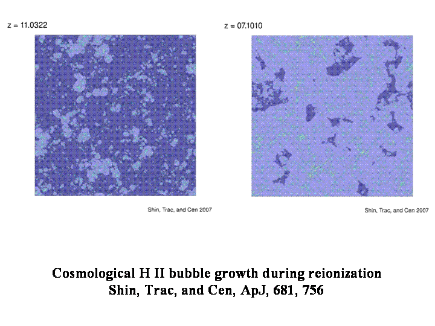
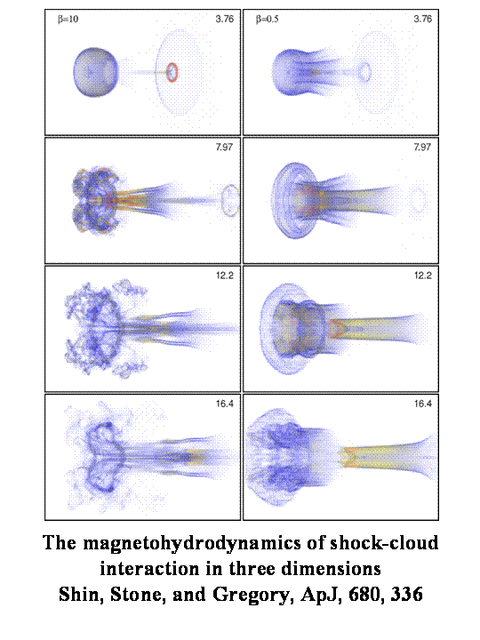
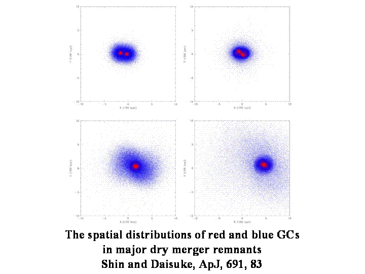
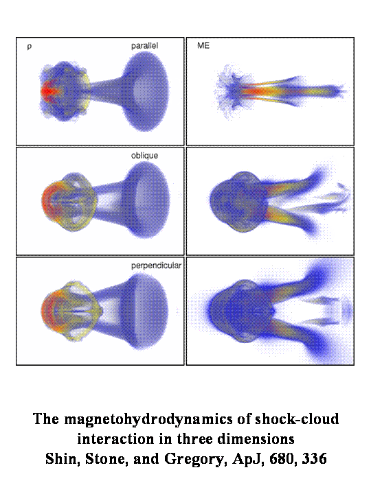
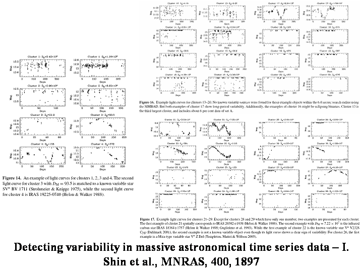
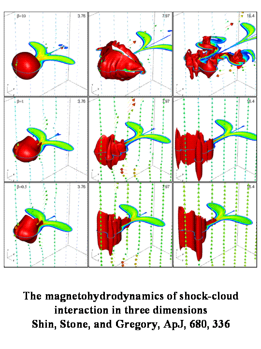